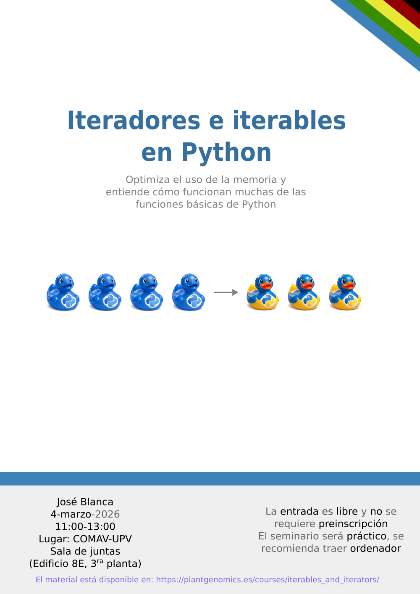

What to Believe and How Much: a short book on statistical thinking
This week I have written a small book: What to Believe and How Much: A short guide to statistical thinking. It is free to download, in English and in Spanish (Qué creer y cuánto).
This week I have written a small book: What to Believe and How Much: A short guide to statistical thinking. It is free to download, in English and in Spanish (Qué creer y cuánto).
A couple of weeks ago, I thought of an experiment: could a system powered exclusively by LLM-based artificial intelligence tools write a book that I would find interesting? The experiment would serve two purposes. First, it would help me practise writing AI skills and learn how to work with AI agents. Second, it might produce a book worth reading.
I started by creating a set of skills that, taken together, would form an editorial pipeline: beginning with initial research on a topic, continuing with the design of a chapter outline, and finally researching and writing each chapter. You can follow both the editorial evolution and the steps involved in producing each book in the editorial GitHub repository.
I am now reading the first book, The Myths of Sumer, produced by this peculiar editorial project, which I have named “Nerd Heaven Publishing,” and I am loving it. So yes, the experiment has been a complete success: I now have an editorial house producing books for my own pleasure.
If you are curious, go ahead and read the first one.
I've created a testing tutorial for students who have never been introduced to the idea of software testing. It uses pytest.
When one starts learning how to program, one tends to think that the objective is to learn the syntax of a particular programming language, but that should never be the main learning objective. It is true that learning your first programming language will allow you to solve many problems, but programming is about ideas and complexity, so the real, deeper, learning objectives should be related to:
You don't just want to learn Python or any other language; what you really should aspire to is to think like a computer engineer capable of:
The fundamentals of programming are never the syntax of a particular language. That syntax is just a way of conveying how that language abstracts the deeper aspects of programming.
Data and action. We store data in computer memory, on disk, or in some other way. For instance, we could store a number or some text in memory. Also, the computer carries out actions, like adding numbers or writing characters on the screen. These are two of the most fundamental programming concepts. When we program we should always think about data and action, about nouns and verbs.
Types. The data that we store always has a type; for instance, it could be an integer or a text string.
Execution order. A computer carries out its operations sequentially, one after another, so you will have to look for solutions that look like recipes or protocols that specify how to solve the problem by taking actions one after another on some data. Controlling the flow of execution, the order in which every single action is taken, is one of the fundamental tools of any programmer.
Scopes. Since a computer program acts by taking actions on data, a naive programmer could think that the ideal approach would be to allow any part of the code to act on any data available at any time, but that has proven to be a terrible idea. When a program is longer than a couple of dozen lines the complexity starts to creep in and our limited minds, capable of holding only a few pieces of information at a time, are not capable of reasoning about the whole program all at once. Thus, if we allow any part of the program to act on any data at any time, it will be very difficult to reason about how the software behaves. Let's imagine that we have an error, a bug, in our program: it is trying to add 1 plus 1, but we are getting 3 instead of 2, and we are trying to locate and fix the bug. If we have 5000 lines of code, where should we start looking for the bug? It is difficult to say. So any programming language imposes limitations on which data we can act on in a particular section of the codebase or at a particular time. In that way, for instance, looking for where the code responsible for the bug related to a particular result could be located becomes much simpler. If in your house you find a problem related to a knife, you'll go to the kitchen, not to the bedroom, the same idea applies to software.
Memory management. All computer programs store data in memory, but in different languages the memory management is carried out in different ways. In some, like in C, the programmer is responsible for reserving memory when it is needed and freeing it when it is no longer required. Other languages, like Python, let you forget about that drudgery, although at a performance cost. If you begin with a language like Python, you won't be aware of the problems related to memory management, and that's great, learning is not easy and not having to learn everything at once is nice, but at some point those problems might start to bite you, so being aware of the memory question is a good thing.
Readability. Beginners tend to think that the objective of a program is to tell the computer what to do, but it is not. Code is written to be read by programmers, and programmers have limited minds. Will your future self be able to understand the piece of code that you are writing right now in a year? For example, if I multiply 'a' by 'b', my future self won't have any context; it is much better to calculate the area of a square by multiplying its width by its height. If a program is useful, we will have to add functionality, adapt it to new environments, and fix bugs (a bug is just an error). For all of that to work we need programmers to be able to understand the code. The only programs that are not read are the ones that are not used, and those are not of much interest. If a codebase is not understandable, it is a bad one, even if it solves the problem it is supposed to solve in a performant way. If a programmer can't reason about a program, it won't be possible for him to improve it, fix it or adapt it.
Reliability. We also want our software to behave in a reliable way, and that implies two questions: does the program work as intended, and will it continue to work in the future? Running very old programs, even very well-written ones, is hard. Think about how difficult it might be to run some twenty-year-old software. If you are not careful and take appropriate actions, the code that you write today might not run in six months from now, when you need to rerun it to include its results in your report or paper. This is not unusual; it is normal, and if you are a beginner, it is not something easy to solve, but if you depend on that code, you will need to think about it.
Performance. Yes, performance is also something to take into account. We want our programs to run as fast as we need them to run, and understanding how to achieve that performance is also important. However, performance is not as important as the novice programmer tends to think. That's why I have put this point last of all. Also, performance always comes at a cost. If you want maximum performance, your program will be more difficult to build, take longer to code, and be harder to understand. That's why programmers aim to build software that is performant enough, but no more than that. Performance is a constraint, but there are others.
These ideas might seem abstract to a new programmer; don't worry if you don't get all of them yet, you are at the start of a long and interesting journey, just try to remember that until you understand these ideas, you do not even have a real idea of what the journey is really about. Also, having a sense that there are still unknown unknowns could be useful. You don't need to know the whole path to take the first step, just remember that there's a whole path in front of you. Don't worry about understanding everything the first day, just remember that learning how to program goes much further than learning the syntax of one or two languages and that you will develop your skills little by little by practicing.
Developing software is about solving complex problems while being able to manage the inherent complexity. Writing software consists mainly of two tasks: 1) creating small pieces that are easy to understand, decoupled, reusable, and well-behaved, and 2) putting those pieces together to solve particular problems. Underneath any computing task, even the simplest one, there are millions of lines of code; the reason we can create complex programs is that other people have built the foundations upon which we can create new software. A good piece of code is one that is capable of abstracting a lot of complexity while presenting a simple interface. Think about the Google search toolbar: you write what you want to search for and you get a result, but you don't need to think about how to organize and retrieve all the data required to perform the search; that's a good abstraction. Not needing to know is liberating, we can't hold all the pieces in our minds at once, so being able to ignore most of them at a particular time is extremely useful. Computing tasks are very complex and no programmer's mind could ever understand all that complexity, so the way forward is to divide the tasks into pieces. Each piece should be easy to understand and should have an interface on which we can rely. Also, to be truly reusable, it has to be as decoupled as possible from other pieces; it has to be able to run independently of them. Programming is akin to building with Lego pieces or structuring a long text into easy-to-find sections and subsections. Acquiring the skill to organize a complex software project takes years of practice; it is not something that you can achieve in a couple of weeks. In professional software circles, you will hear a lot of talk about modularity, abstraction (hiding the inner workings of a piece), and related terms.
Software is created by people organized in different communities, like the community of Python web developers or the community of Linux programmers, and the artifacts that they create, the languages, technologies and libraries, as well as the way in which they interact with each other comprise their culture. Experienced programmers know that when they learn a new language, syntax is the least of their concerns; the most important thing is to learn the culture around that language. Which are the recommended libraries, the podcasts to listen to, the blogs to follow, and the conferences to attend? Without culture and community, a language is just a dead set of terms to be studied by historians.
Engineering is about getting solutions for a problem given a set of constraints. Learning what the constraints are, like performance, development time, future maintainability, and developing the ability to judge how to balance those constraints in a particular situation is a key requirement of the art of programming. Good software development is not just about solving problems, that is only part of it. Nowadays many programming tasks can be solved by generative AIs, meaning that they can write code that solves the problem at hand. But that's not what a good software developer aims to do. The key is to understand whether a piece of code satisfies the constraints at hand: performance, reliability, maintainability, etc. And in order to do that, the software developer has to develop some criteria, some judgment. Some of these constraints are performance vs maintainability, or cost vs reliability.
If you're a beginner, don't worry right now about all these details, just enjoy solving problems adequate to your current skill and knowledge. However, don't forget that you won't be an experienced professional until you have experience with all these topics.
A programmer always has something new to learn—a new language, a different way of structuring code, or the low-level details of how a specific technology works. In this regard, a novice and a professional developer are the same: both are eternal students. Therefore, understanding how to learn is a vital skill for both beginners and professionals.. We are living in the age of generative AI, and while these tools are incredibly powerful, we must use them mindfully.
It might sound counterintuitive, but exercises are not meant to be "solved." If the only goal were to have a solution, you could simply ask a friend to do it for you. AI tools can be excellent teaching assistants, but you must be careful. If you are more interested in finishing a task than in learning from it, the AI tool will happily generate an answer. But just like having a friend do your homework, you won't gain any knowledge from it.
Exercises are opportunities to practice. It is through this practice that you develop your problem-solving skills. You will be tempted to let the AI write the code for you, but if you want to grow, you must resist that urge. If your objective is learning, do not use AI to write code you don't understand—unless you intend to study that code until you do.
You won't learn German or Chinese just by reading a grammar book or a dictionary. Similarly, you won't become a good programmer just by reading about syntax. At the start of your journey programming won't be intuitive; it will take quite a lot of practice to start thinking like a developer. Try to find a path that makes the journey engaging. It is a mental workout, and the first steps are often the hardest. If you find a particular concept difficult, don't despair—it’s difficult for almost everyone. Look for a different explanation or a simpler example, but remember: it will always require commitment.
The main limitation to your progress isn't a lack of great online materials, there are plenty of them. It is your own time and dedication. Quality learning materials are useful, but the key to becoming fluent is practice, there is no shortcut. Even for professionals, coding is rarely "easy." It involves continuously solving problems within complex systems. It might be a joyful process, but it is the specific joy of solving difficult puzzles.
Instead of using AI to do the work, use it to help you understand the "why" and "how." Here is how to use AI as a tutor:
Don't trust them blindly. AIs "hallucinate", they make things up, especially when dealing with unusual problems. They also tend to be "agreeable"; they may follow your lead even if you are heading down a suboptimal path. Ask the AI to be critical of your approach. More importantly, don't trust anyone implicitly; even the most experienced programmers can be wrong. Your goal is to develop the knowledge and intuition to judge the code for yourself.
As a general rule: every AI suggestion must be verified. Always ask for a test case, an example of input/output, or a minimal snippet to prove that the suggestion actually works.
One might think, if AIs are so good at writing code, why bother putting in the effort to learn how to program? My answer to that question is that in 2026, learning how to code is as useful as ever. AI tools allow you to develop more complex software than before, but that complexity is relative to what you could achieve without them: if you don't know how to code, you won't be able to run the code created by them, if you know just a little bit of programming, you'll be able to do a little bit more than before, and if you're a professional developer you'll be able to do much more now.
In disciplines such as biology, physics, and history, there are many tasks that can be easily solved by writing small programs. For the occasional programmer, such as an expert in any technical field that could benefit from having small pieces of code that solve particular problems, AI tools are a huge boon. Now, experts will be able to write much more code much faster; AI means more code, not less, but if you don't know what programming is about, you won't be able to take advantage of all this power.
What to program. Part of the art of programming is knowing which tasks are possible. If you have no clue about what coding is and what it can do for you, you won't think about asking the AI what code to write for you. A big part of the skill in building software is understanding what's possible and what isn't, and having at least a rough idea of how those things can be accomplished. Without a foundational knowledge of what a program is capable of, an expert cannot effectively prompt an AI to solve a specific task.
How to use it. Imagine that I'm a friend of yours and I've already written the code for you and you have received it in your inbox, now what are you going to do with it? If you want to run the code .you need to know quite a bit about the craft of setting up the environment and running the code.
Does it really work. Great, you have managed to run it and you have a result, is this output correct? How can you know? Remember, AIs hallucinate and people make mistakes, so will you be able to review the code and check that it is doing what it is supposed to do?
Is it reliable. Six months or one year has passed, you have prepared a report or a paper with the results and the reviews and comments are in. They ask you to modify the inputs slightly and to rerun the program to check a couple of details. Was your code reliable? Did you take into account that libraries, compilers and interpreters change? Do you even know what a library or an interpreter is and why these changes could make your code brittle?? This is a huge problem, it is not enough for the code to work, we need the program to run reliably and this is not a trivial task and, no, AIs by default don't create reliable projects unless you ask them to.
Do professional programmers code in the age of AI? Definitely yes. Many or most of them are using AI tools, and some of us even use them to write code, but all professional programmers are well aware of the limitations of these excellent tools.
They are capable of creating moderately complex software that at least runs. So one might think of them as efficient junior developers capable of recalling a huge amount of minutiae. Although they might write thousands of lines very fast, unless one directs them very tightly, they tend to produce low-quality code that is difficult to maintain. AI models, focused on implementing a specific prompt, often ignore wider application contexts, leading to "code slop", code that compiles and runs but is verbose, brittle, and flawed.
They lack the architectural judgment required for large-scale system design, they are not very good at organizing big projects. The professional can now learn faster and even get some code written by the AI, but organizing a somewhat complex software project requires a deep understanding developed through years of experience..
They are also not that good at evaluating the different constraints that any software project has and deciding how to strike a balance for your particular current needs. For that you still need a lot of experience. One might say that highly skilled programmers are needed now more than ever.
Beyond the job market and scientific research, there is an intrinsic value to programming that AI cannot replicate: the joy of creation. For many programming is a hobby that offers the satisfaction of solving difficult problems and the empowerment of building something that did not previously exist
Programming is fun for many people, they do it in their spare time because they like it. You get the satisfaction of solving puzzles; when you manage to crack them, it empowers you. Most of all, you can think of something that you'd like to exist in the world and you just go and build it. Being capable of creating anything that you fancy is a great satisfaction in the software world, and the only thing you need is a modest computer and dedication.
I have prepared a seminar about iterables and iterators in Python. My idea is to teach it to PhD student's and scientists that are already using Python, specially to the ones processing large amounts of data.

The seminar will be held it COMAV's Sala de Juntas at UPV on the 4th of march and will be open for anybody interested.
I've created a tutorial about iterables, iterators and generators in Python.
I have just finished reading A Conflict of Visions by Thomas Sowell.
While I didn't love the writing style, I think the central premise is brilliant: underlying the politics and ideologies of different people is a specific vision of human nature.
The Unconstrained Vision: Some believe that humans can truly understand the complexities of how communities work. They argue that "advanced" individuals can mold society for the greater good.
The Constrained Vision: Others feel that societies are far too complex to be fully understood and that people are primarily driven by their own interests. In this view, trying to reshape society according to our own ideals often ends in disaster. Furthermore, because human beings have conflicting desires, no "ideal" solution can ever be found—only trade-offs and compromises.
While the first group evaluates outcomes and calls for intervention when results aren't "perfect," the second group simply aspires to maintain a social process that produces a "good enough" result.
For the longest time I have needed a program to plot scatter plots in 3D with the ability of selecting points using a lasso tool. For instance, I needed to select some individuals in a plot showing genetic distances in order to know its geographical origin.
During a long time we used CurlyWhirly, but that software is not maintained anymore, then we moved to glue, but I always found that software a little too cumbersome for my taste. Many times I've looked for alternatives, but I found none.
Alas, I was resigned, but last december I heard about anywidget in the Talk Python Podcast, a library created to ease the development of marimo and jupyter notebook widgets. I have never programmed anything serious in Javascript, but I thought that maybe with the help of an AI tool and anywidget I could try to build a 3D scatterplot notebook widget to my liking, and I did it!
You can download the widget from its GitHub repository or from PyPI. We have already used it in our research on the history of the tomato.